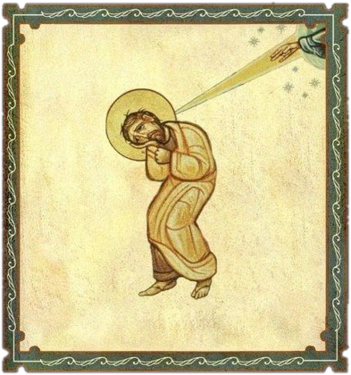
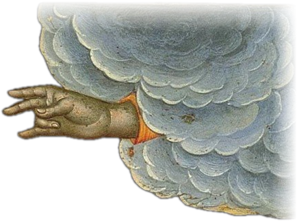

О сајту
Двије хиљаде година искуства о души.
Један ум, једно срце.
Православна аскетска традиција вијековима је пажљиво описивала унутрашњи живот човјека — помисли, страсти, пажњу, тиховање. Савремена психологија истим питањима прилази другим језиком. Неуроаскеза постоји да та два језика преводи један у други — не да их изједначи, него да их доведе у разговор.
Предање Цркве
Искуство подвижника од пустиње до данас — психологија прије психологије.
- Учење о помислима — Евагрије Понтијски и Добротољубље
- Тиховање и Исусова молитва — исихастичка пракса пажње
- Страсти и врлине као динамика душе
- Личност и заједница — од Свете Тројице до породице
Савремена психологија
Шта наука о уму данас зна — и гдје ћути пред тајном личности.
- Пажња, навика и неуропластичност
- Когнитивне дисторзије и борба са помислима
- Психологија привржености и однос са Богом као Оцем
- Туга, анксиозност и смисао — клиничко и духовно
Из писаонице
Текстови који спајају олтар и ординацију
Сваки текст полази од стварног питања — туге, расијаности, навике, односа — и тражи одговор и у светоотачком предању и у савременим истраживањима.
Тиховање као тренинг пажње: шта исихазам зна о расијаном уму
Зашто отци пустиње звуче као савремени истраживачи пажње — и шта пракса Исусове молитве чини са умом који стално бјежи.
Прочитај текстОд прилога до пристанка: светоотачка мапа аутоматске мисли
Степени развоја помисли код отаца и когнитивни модел аутоматских мисли — двије мапе истог терена, читане упоредо.
Прочитај текстМоже ли хришћанин код психолога? Исповијест и терапија без забуне
Шта је дјело свештеника, а шта терапеута; гдје се службе додирују, а гдје замјена улога штети и души и лијечењу.
Прочитај текстПост као наука о навици: четрдесетница и снага малог одрицања
Зашто Црква вјежба вољу кроз тијело — и шта истраживања самоконтроле говоре о смислу поста који је старији од њих.
Прочитај текстПриврженост и богоопштење: како рана љубав обликује слику о Богу
Теорија привржености сусреће богословље личности: зашто човјек Бога често гледа очима свог дјетињства — и како се та слика исцјељује.
Прочитај текстТуга која није болест: жалост по Богу и депресија — разликовање духова
Гдје пролази граница између покајне туге, обичне жалости и клиничке депресије — и зашто је то разликовање дјело љубави, а не дијагнозе.
Прочитај текстПодкаст
Разговори у којима богослов и психолог сједе за истим столом
Подкаст „Неуроаскеза" — мирни, дуги разговори са свештеницима, психолозима, психијатрима и научницима о души, уму и спасењу. Без журбе, без сензације.
- Еп. 01 Шта је неуроаскеза? Уводни разговор: зашто аскетика и наука о уму нису непријатељи ▶
- Еп. 02 Помисли под микроскопом Евагријевих осам помисли и савремена когнитивна наука ▶
- Еп. 03 Молитва и мозак Шта се дешава у уму човјека који се моли — разговор са неуронаучником ▶
- Еп. 04 Дигитални пост Пажња као највреднија имовина и аскеза екрана ▶
Стекни мир у себи, и хиљаде око тебе ће се спасити.Преподобни Серафим Саровски

„Боже, милостив буди мени грешноме“ · Лк 18,13
Писмо читаоцима
Једно писмо мјесечно.
Без буке.
Нови текстови, нове епизоде подкаста и по једна мисао отаца за тај мјесец — право у твоје сандуче.

Десница Господња твори силу · Пс 117,16